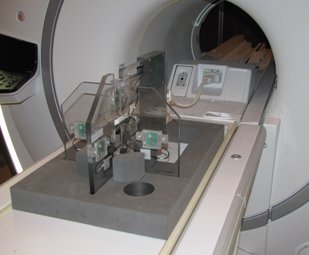
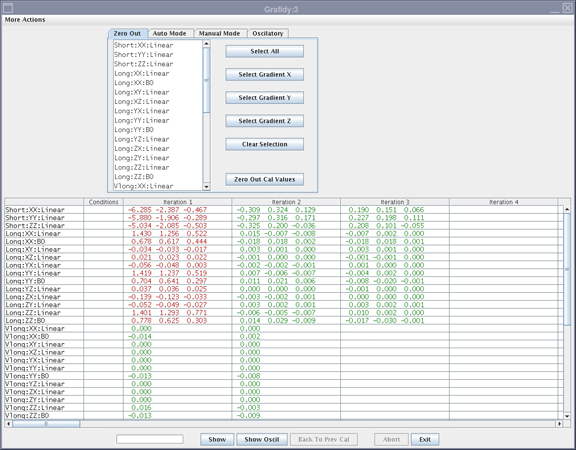
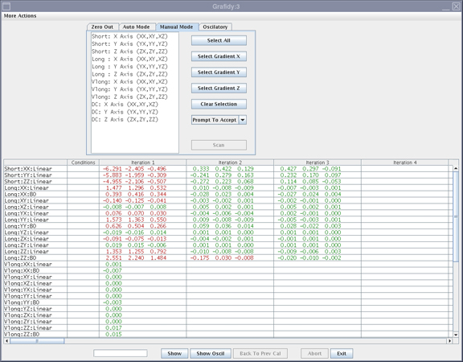

GE Exclusive Use Only
Direction 5670006, Rev# 1
Discovery MR750w GEM Service Methods
Module Version 19.0, Version Date 10/18/11
GE Exclusive Use Only |
| Required Persons | Preliminary Reqs | Procedure | Finalization |
|---|---|---|---|
| 1 | Not Applicable | 1 Hour | Not Applicable |
Use the Grafidy 3 procedure to perform Eddy Current Compensation. Grafidy 3 adjusts and compensates short, long and very long time constant eddy currents for both linear and B0 terms. Grafidy 3 should be run in Auto Mode first. If Auto Mode fails to bring any of the terms into specification, Manual Mode and Oscillatory Mode can be used to touch up.
Grafidy 3 uses a dedicated pulse sequence (psd), 6-channel fixture, and Grafidy 3 software. The Grafidy 3 fixture plugs into the LPCA for Transmit / Receive. No additional fixtures or cables are needed.
This tool simplifies setting up the calibration and collects data from all 6 coils simultaneously. The basic steps required in Grafidy 3 are:
Set up the 6-channel Grafidy fixture.
Start Grafidy 3 procedure, and run the tool in Auto Mode.
If Auto mode does not bring all terms into specification (still red in the Result/Area Table), proceed to Oscillatory Mode in Oscillatory Mode to do touch up.
Review the detailed description for using the Grafidy 3 Tools. For more information, see Grafidy 3 Tools and Grafidy 3 Troubleshooting.
| Item | Qty | Effectivity | Part# | Manufacturer | |
|---|---|---|---|---|---|
| Grafidy Kit | 1 | 3.0T | 5135527-2 | - | |
| Grafidy Kit | 1 | 1.5T | 5135527 | - | |
| Service Foam Positioner | 1 | GEM systems -- flat tables only | 5404900 | - | |
| Item | Qty | Effectivity | Part# | Manufacturer | |
|---|---|---|---|---|---|
| RF Coil Assembly | 1 | 3.0T | 5135514-2 | - | |
| RF Coil Assembly | 1 | 1.5T | 5135514 | - | |
| ||||
| poison hazard | ||||
| the phantom contains Cupric sulfate (CuSO4). do not ingest. | ||||
| dispose of as a hazardous waste according to state and federal regulations. |
| Condition | Reference | Effectivity |
|---|---|---|
DQA II Tool within specification | - | - |
Shim per Installation and Calibration Wizard | - | - |
Unfold the 6-channel Grafidy Fixture and lock the arms into place (90° from center plate).
Connect the Hypertronics Cable to T/R Board and secure with screws. Place the fixture at the front (Head coil end) of the MR table with the connection box toward the bore. as shown.
Illustration 1: Grafidy Hardware Setup

Center the laser crosshairs on top of the fixture. (See the illustration below). Landmark the system and press Advance to Scan.
Illustration 2: Grafidy Tool and Centering Point

Start the Grafidy 3 tool.
Restricted Service tools available to GE Field Service: Make sure your service key is installed. Select Calibration Wizard from the Calibration menu and Click here to start this tool. Once the Calibration Wizard starts, select Grafidy3 from the menu, review and okay the pre and post-dependencies, and select Click here to start this tool to start the procedure. If unable to start the Restricted Service tools, use the non-proprietary method below.
Starting Non-proprietary Service Tools: From the Common Service Desktop, select Calibration > Grafidy3 from the Calibration menu, and Click here to start this tool to start the procedure.
Click on the Auto Mode tab shown below. (All three-coil axes will be selected.) Next, click the [Scan] button to start the calibration.
When the scan is active, it can be stopped by pressing the [Abort] button and the <STOP> button on keyboard.
The [Show] button displays the result graphs and the [Show Oscil] button on the [Oscillatory] tab shows the oscillatory graphs.
Illustration 3: Auto Mode Setup

When in Auto/Manual mode, a number of signal checks are performed to ensure the proper state of the Grafidy fixture. The following signals are examined from every channel, and an error is reported if a problem is found. Signals are as follows:
Position
SNR
Signal Saturation
The Grafidy 3 software runs multiple scans to bring each term into specification. It iterates up to the maximum specified (default is 5 iterations). As each component finishes a scan/analysis iteration, the residual of the eddy current of the measurement displays in the results table. The results are color-coded as indicated below.
| Text Color | Definition |
| Red | Values above spec |
| Green | Within spec |
Review the numeric output values from the Auto Mode scan. Verify that the results of the final iteration for each component are below specifications (green). See illustration below for assistance in reading output values.
Illustration 4: Reading the Output: Specs and Actual Values (Smoothed) Circled

If a component is not within specification after the maximum number of iterations, it may be necessary to use Manual mode to calibrate that component. If so, proceed to the next section.
Manual Mode allows you to iterate through the process and decide when to stop.
Select the Manual Mode tab shown below.
Illustration 5: Manual Mode Tab

Select the desired terms, and press Scan.
If the Prompt To Accept mode is active, a graph of the results displays after the scan is completed.
Illustration 6: Results Window with Accept/Cancel Buttons

If a good fit is displayed (fit line aligned with data line), click the [Accept] button. The calibration values will be saved to disk, and used in the next scan. Repeat this process by returning to Step 2.
If a bad fit is displayed, click [Cancel].
| NOTE: | This will leave the last accepted values in the calibration files. Do not expect any improvement on future scans when the fit does not match the data, even if the Cal parameters are accepted. |
The last iteration for any component must be a check only. Do not accept the fit parameters. You will not be allowed to exit immediately after updating the Cal parameters.
If problems are encountered or if it is out of specification after Auto mode, it may be necessary to run Oscillatory mode, outlined in the next section.
| NOTE: | For additional troubleshooting information, see Grafidy 3 Tools and Grafidy 3 Troubleshooting. |
Select the Oscillatory tab shown below.
Illustration 7: Grafidy 3 Screen - Oscillatory Tab

Select the applicable axis to perform Oscillatory mode compensation.
Select the [Transfer Func] button. Wait for scans to complete.
After the transfer function is complete, select the [Scan] button. A scan will be performed followed by a fit, and followed by another scan. (This process takes approximately 16 minutes.)
| NOTE: | Once a scan is compete, the screen will remain inactive while software is performing the fit. The screen will become active once fit and final scan are completed. |
Remove Grafidy fixture from the system.
Exit the software tool.